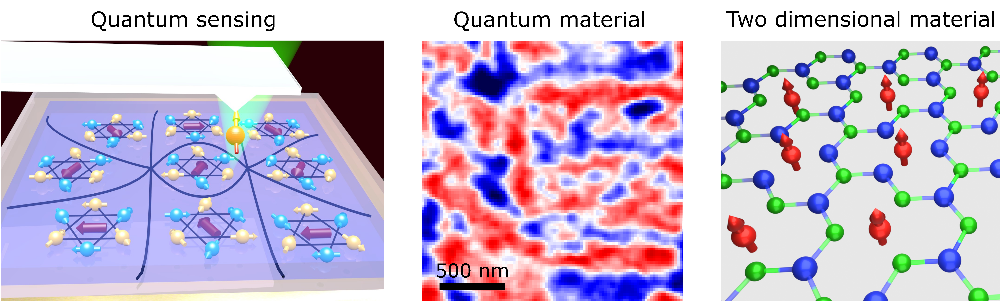

Quantum Materials and Quantum Sensing
Our Group
Our research group focuses on developing quantum sensing and imaging technique to study various properties (spin, charge, and heat, etc) of quantum materials in the nanometer scale. In addition, we design and engineer hybrid quantum devices to achieve efficient qubit control for quantum information applications. Our research tools are versatile, including optical measurement based on nitrogen vacancy center in diamond, transport and microwave spectroscopy as well as scanning probe magnetometry. Here is a video on our lab.
Openings
We are recruiting at all levels. We are looking for motivated postdocs. If you are interested, please email (cdu71[at]gatech.edu) to discuss research opportunities.
Research overview

News
- Senlei, Nathan, Mengqi, Hanyi's paper on Observation of stacking engineered magnetic phase transitions within moiré supercells of twisted van der Waals magnets is published in Nature Communications. (July 2024)
- Jingcheng, Hanyi, Mengqi, Gerald, Jiu, Dziga's paper on Sensing spin wave excitations by spin defects in few-layer-thick hexagonal boron nitride is published in Science Advances. (May 2024)
Featured in Science Advances.
- Nathan successfully defended his Ph.D thesis, congratulations! (December 2023)
- Nathan, Senlei, Hanyi, Mengqi, Jingcheng's paper on Local Control of a Single Nitrogen-Vacancy Center by Nanoscale Engineered Magnetic Domain Wall Motion is published in ACS nano. (December 2023)
- Mengqi's collaborative work on Dimensionality crossover to 2D vestigial nematicity from 3D zigzag antiferromagnetism in an XY-type honeycomb van der Waals magnet is submitted to Arxiv. (November 2023)
- Mengqi, Jingcheng, Senlei, Hanyi, Dziga's paper on Layer-Dependent Magnetism and Spin Fluctuations in Atomically Thin van der Waals Magnet CrPS4 is published in Nano Letters. (September 2023)
- Nathan's collaborative work on Spin dynamics in van der Waals magnetic systems is published in Physics Reports. (August 2023)
- Mengqi, Gerald, Hanyi, and Jingcheng's paper on Revealing intrinsic domains and fluctuations of moiré magnetism by a wide-field quantum microscope is published in Nature Communications. (August 2023)
- Jingcheng, Gerald, Mengqi, Nathan's paper on Quantum sensing of local stray field environment of micron-scale magnetic disks is published in Applied Physics Letters. (July 2023)
- Mengqi's collaborative work on Quantum metric nonlinear Hall effect in a topological antiferromagnet is published in Science. (June 2023)
- Senlei, Mengqi, Hanyi, and Nathan's paper on scanning NV imaging of magnetic domains in Mn3Sn films is published in Nano Letters. (May 2023)
- Gerald, Senlei, Mengqi, and Nathan's paper on coherent control of NV centers via resonant magnetic tunnel junctions is published in Physical Review Applied. (December 2022)
- Our collaborative work on The 2022 magneto-optics roadmap is published in Journal of Physics D: Applied Physics. (September 2022)
- Mengqi, Jingcheng, Hanyi, Nathan, Senlei and Dziga's paper on quantum imaging using novel color centers in two-dimensional material hBN is published in Nature Communications. (August 2022)
- Nathan, Mengqi, Hanyi and Gerald's paper on quantum imaging of phase transitions and spin fluctuations in magnetic topological MnBiTe nanoflakes is published in Nano Letters. (July 2022)
- Gerald, Senlei, Hanyi, Mengqi's paper on quantum imaging of non‐collinear topological antiferromagnet is published in Advanced Materials. (March 2022)
- Our paper on spin pumping of an easy-plane antiferromagnetic is published in Physical Review Letters. (September 2021)
- Our paper on noninvasive measurements of spin transport properties of an antiferromagnet is published in Science Advances. (September 2021)
- Nathan, Mengqi, Hanyi and Gerald's paper on quantum imaging of a layered topological superconductor is published in Nano Letters. (August 2021)
- Paper on electrical control of single NV spin as a qubit is published in npj Quantum Information. (September 2020)
- The first paper from our group on nanoscale quantum sensing of magnon excitations is published in Nano Letters. (April 2020)
|
Thanks to: |
|